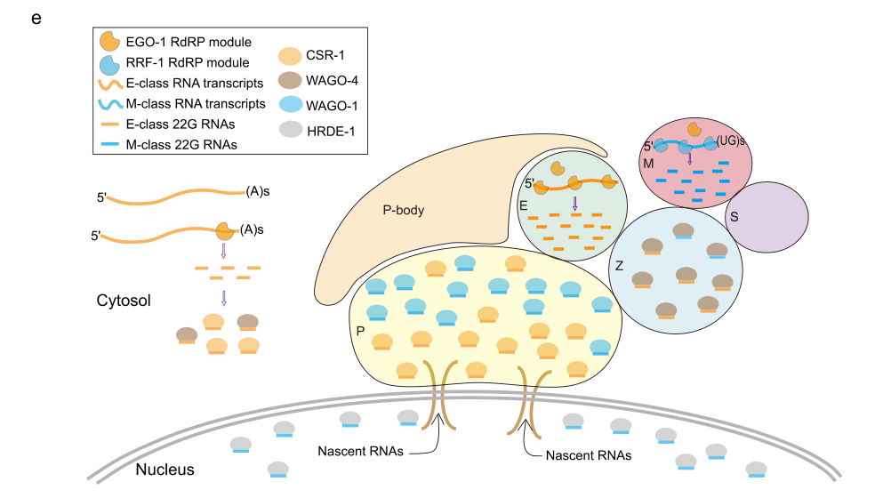

WAGO-1 (Worm-specific Argonaute 1) is a member of the WAGO subfamily of Argonaute proteins that functions as a key effector in the endogenous small interfering RNA (endo-siRNA) pathway in the C. elegans germline. WAGO-1 binds 22G-RNAs, which are RNA-dependent RNA polymerase-derived secondary siRNAs characterized by their 22-nucleotide length and 5'-guanosine. Unlike canonical Argonaute proteins, WAGO subfamily members lack conserved metal-binding residues required for catalytic slicer activity and likely function through recruitment of other nucleases for target degradation. WAGO-1 localizes to P granules (germline nuage structures) where it functions in a genome surveillance system to silence transposons, pseudogenes, and cryptic loci. WAGO-1 acts downstream of the primary Argonaute PRG-1 in the piRNA pathway, where piRNA-triggered 22G-RNA production leads to loading of these secondary siRNAs into WAGO-1 and HRDE-1. WAGO-1 interacts with the Vasa homolog RDE-12 and the zinc-finger helicase ZNFX-1 as part of the RNA silencing machinery. The protein is enriched in sperm and oocytes and is essential for germline integrity and transposon control.
| GO Term | Evidence | Action | Reason |
|---|---|---|---|
|
GO:0005634
nucleus
|
IBA
GO_REF:0000033 |
UNDECIDED |
Summary: WAGO-1 is localized to cytoplasmic germ granules, with nuclear localization unresolved.
Reason: Direct studies support P-granule localization and a cytoplasmic silencing role. Those positive results do not alone establish absence from every nuclear context. The nuclear IBA from PTN001875625 is left unresolved pending lineage-specific localization assessment; the separate WAGO catalytic-loss argument does not establish a localization loss. The existing OpenScientist report explicitly separates cytoplasmic WAGO-1/P-granule surveillance from nuclear HRDE-1/NRDE silencing. This supports the canonical compartment distinction but does not supply direct exclusion evidence for every possible nuclear WAGO-1 pool; no duplicate OpenScientist query was launched.
Propagation Review
Root cause:
UNRESOLVED
Sources checked:
PANTHER:PTN001875625
· PTN001875625
UNRESOLVED
The ancestral nuclear-localization assertion is traceable; target-specific evidence excluding a nuclear pool has not been established.
Supporting Evidence:
PMID:19800275
We show that, in the germline, one system is dependent on worm-specific AGOs, including WAGO-1, which localizes to germline nuage structures called P granules
PMID:24684931
RDE-12 colocalizes with WAGO-1 in germline P granules and in cytoplasmic and perinuclear foci in somatic cells
file:worm/wago-1/wago-1-deep-research-falcon.md
the best-supported assignment is **WAGO-1 as primarily a cytoplasmic/perinuclear post-transcriptional effector** within the WAGO 22G-RNA surveillance pathway
file:worm/wago-1/wago-1-deep-research-openscientist.md
central cytoplasmic effector of the endogenous 22G-RNA silencing pathway in the germline
|
|
GO:0005737
cytoplasm
|
IBA
GO_REF:0000033 |
ACCEPT |
Summary: IBA annotation for cytoplasmic localization is broadly consistent with experimental evidence showing WAGO-1 in cytoplasmic P granules. However, the more specific term GO:0043186 (P granule) is preferable as it captures the precise subcellular localization.
Reason: Cytoplasmic localization is accurate - WAGO-1 localizes to cytoplasmic P granules (PMID:19800275, PMID:24684931). This is a valid parent term for the more specific P granule localization. Retaining as it provides broader context.
Supporting Evidence:
PMID:19800275
We show that, in the germline, one system is dependent on worm-specific AGOs, including WAGO-1, which localizes to germline nuage structures called P granules
file:worm/wago-1/wago-1-deep-research-falcon.md
WAGO-1 is consistently described as a **cytoplasmic/perinuclear germ-granule Argonaute** (P-granule localized)
file:worm/wago-1/wago-1-deep-research-openscientist.md
It localizes to perinuclear P granules (nuage) in germ cells
|
|
GO:0004521
RNA endonuclease activity
|
IBA
GO_REF:0000033 |
REMOVE |
Summary: This annotation is phylogenetically inferred from slicer-competent Argonaute proteins. However, WAGO subfamily Argonautes specifically lack the conserved metal-binding residues (DDH/DDX catalytic tetrad) required for endonuclease activity. UniProt explicitly notes that WAGO subfamily members lack conserved metal-binding residues and probably do not cleave target mRNAs directly (PMID:17110334).
Reason: WAGO-1 lacks the catalytic tetrad required for RNA endonuclease (slicer) activity. This is a known distinguishing feature of the WAGO subfamily. The protein likely recruits other endonucleases for target degradation rather than performing cleavage itself. This annotation is an over-annotation based on ancestral function that has been lost in this subfamily.
Propagation Review
Root cause:
PROPAGATION BAD
Failure modes:
PSEUDO OR SUBACTIVITY LOSS
Sources checked:
PANTHER:PTN008584027
· PTN008584027
SUPPORTS SOURCE BUT NOT TARGET
The ancestral Argonaute assertion is genuine, but WAGO-1 belongs to the specialized secondary-siRNA effector branch. Its established 22G-RNA specificity and non-slicer mechanism do not support transfer of this particular activity.
Supporting Evidence:
PMID:17110334
these AGO proteins lack key residues required for mRNA cleavage
file:worm/wago-1/wago-1-deep-research-falcon.md
WAGO-family Argonautes were reported to **lack the catalytic residues required for Slicer activity**, implying WAGO-mediated silencing often occurs via **cleavage-independent mechanisms**
file:worm/wago-1/wago-1-deep-research-openscientist.md
WAGO-1 binds secondary small interfering RNAs (22G-RNAs)
|
|
GO:0035194
regulatory ncRNA-mediated post-transcriptional gene silencing
|
IBA
GO_REF:0000033 |
ACCEPT |
Summary: WAGO-1 is a central effector in the 22G-RNA pathway, which is a form of endo-siRNA-mediated gene silencing. The protein binds 22G-RNAs and mediates silencing of transposons, pseudogenes, and aberrant transcripts in the germline (PMID:19800275). This is a core function of WAGO-1.
Reason: This annotation accurately captures WAGO-1's primary biological function. WAGO-1 participates in a regulatory ncRNA-mediated silencing pathway using endogenous 22G-RNAs. Experimental evidence from PMID:19800275 demonstrates this function directly.
Supporting Evidence:
PMID:19800275
WAGO-1 silences certain genes, transposons, pseudogenes, and cryptic loci
file:worm/wago-1/wago-1-deep-research-falcon.md
WAGO-1 is an Argonaute effector** that binds **secondary 22G-RNAs** and mediates **germline silencing / genome surveillance** of targets including **transposons, pseudogenes, and cryptic loci**
|
|
GO:0016442
RISC complex
|
IBA
GO_REF:0000033 |
ACCEPT |
Summary: As an Argonaute protein that binds small RNAs and mediates gene silencing, WAGO-1 functions as part of an RNA-induced silencing complex. While the worm-specific WAGO-1-containing complex may have distinct features, RISC complex is an appropriate general term for Argonaute-containing silencing effector complexes.
Reason: WAGO-1 is the core Argonaute component of a small RNA-mediated silencing complex. It associates with 22G-RNAs and interacts with RDE-12 (PMID:24684931) and ZNFX-1 (PMID:29775580) as part of the silencing machinery. RISC complex appropriately describes this functional complex.
Supporting Evidence:
PMID:24684931
RDE-12 forms an RNase-resistant (target mRNA-independent) complex with WAGO-1
PMID:17110334
several other AGO proteins interact with amplified siRNAs to mediate downstream silencing
file:worm/wago-1/wago-1-deep-research-falcon.md
RdRP-produced 22G-RNAs can be loaded onto WAGOs “**without Dicer**” processing
|
|
GO:0036464
cytoplasmic ribonucleoprotein granule
|
IBA
GO_REF:0000033 |
ACCEPT |
Summary: P granules are a type of cytoplasmic ribonucleoprotein granule. WAGO-1 has been directly demonstrated to localize to P granules (PMID:19800275). This term is appropriate as a parent term, though the more specific GO:0043186 (P granule) is also annotated with experimental evidence.
Reason: This is a valid broader annotation. P granules are cytoplasmic ribonucleoprotein granules, and WAGO-1 localizes to P granules (PMID:19800275, PMID:24684931). The IBA annotation is consistent with experimental data.
Supporting Evidence:
PMID:19800275
We show that, in the germline, one system is dependent on worm-specific AGOs, including WAGO-1, which localizes to germline nuage structures called P granules
file:worm/wago-1/wago-1-deep-research-falcon.md
Germ granules are **perinuclear, RNA-rich, membrane-less condensates** at the cytoplasmic face of germline nuclei
file:worm/wago-1/wago-1-deep-research-openscientist.md
It localizes to perinuclear P granules (nuage) in germ cells
|
|
GO:0035198
miRNA binding
|
IBA
GO_REF:0000033 |
MODIFY |
Summary: This annotation is phylogenetically inferred from miRNA-binding Argonautes. However, WAGO-1 specifically binds 22G-RNAs (endogenous siRNAs), not miRNAs. The 22G-RNA pathway is distinct from the miRNA pathway in C. elegans. WAGO-1 binds secondary siRNAs produced by RNA-dependent RNA polymerases, which are structurally and functionally distinct from miRNAs.
Reason: WAGO-1 binds 22G-RNAs (endogenous siRNAs), not miRNAs. The miRNA binding annotation is an over-generalization from other Argonaute family members. The appropriate term is siRNA binding (GO:0035197), which accurately describes binding to the 21-23 nt small interfering RNAs that WAGO-1 associates with.
Propagation Review
Root cause:
PROPAGATION BAD
Failure modes:
FUNCTIONAL DIVERGENCE
Sources checked:
PANTHER:PTN001113179
· PTN001113179
SUPPORTS SOURCE BUT NOT TARGET
The ancestral Argonaute assertion is genuine, but WAGO-1 belongs to the specialized secondary-siRNA effector branch. Its established 22G-RNA specificity and non-slicer mechanism do not support transfer of this particular activity.
Proposed replacements:
siRNA binding
Supporting Evidence:
PMID:17110334
several other AGO proteins interact with amplified siRNAs to mediate downstream silencing
file:worm/wago-1/wago-1-deep-research-falcon.md
WAGO-1 associates with **22G-RNAs**: Gu et al. show **transposon 22G-RNAs** are enriched in **WAGO-1 immunoprecipitation** samples
file:worm/wago-1/wago-1-deep-research-openscientist.md
WAGO-1 binds secondary small interfering RNAs (22G-RNAs)
|
|
GO:0003727
single-stranded RNA binding
|
IBA
GO_REF:0000033 |
ACCEPT |
Summary: Argonaute proteins bind single-stranded guide RNAs. WAGO-1 binds 22G-RNAs in their single-stranded form after processing. This is a valid general molecular function annotation for an Argonaute protein.
Reason: WAGO-1 binds single-stranded 22G-RNAs as guide RNAs for target recognition. This is a core molecular function of Argonaute proteins. The annotation is appropriate though more specific terms like siRNA binding would also be accurate.
Supporting Evidence:
PMID:17110334
Argonaute (AGO) proteins interact with small RNAs to mediate gene silencing
file:worm/wago-1/wago-1-deep-research-falcon.md
**22G-RNAs** are ~22-nt small RNAs with a strong **5′ guanosine (5′G) bias**
|
|
GO:0003676
nucleic acid binding
|
IEA
GO_REF:0000002 |
ACCEPT |
Summary: IEA annotation based on InterPro domains (PAZ and Piwi domains). This is a very broad term that is subsumed by more specific RNA binding annotations. While technically correct, it provides little informative value given the more specific annotations.
Reason: This is a valid but very general annotation based on domain composition. The PAZ and Piwi domains are nucleic acid binding domains. More specific annotations (RNA binding, siRNA binding) are also present and more informative.
|
|
GO:0003723
RNA binding
|
IEA
GO_REF:0000002 |
ACCEPT |
Summary: IEA annotation based on InterPro PAZ domain (IPR003100). WAGO-1 contains PAZ and Piwi domains characteristic of Argonaute proteins that bind small RNAs. This is a valid general annotation.
Reason: WAGO-1 binds 22G-RNAs through its PAZ and Piwi domains. RNA binding is a core molecular function. This annotation is appropriate as a broader classification of the siRNA binding activity.
|
|
GO:0031047
regulatory ncRNA-mediated gene silencing
|
IEA
GO_REF:0000043 |
ACCEPT |
Summary: IEA annotation based on UniProtKB keyword mapping (RNA-mediated gene silencing). This term encompasses both transcriptional and post-transcriptional silencing. WAGO-1 primarily functions in post-transcriptional silencing (GO:0035194), which is a child term already annotated.
Reason: This is a valid parent term for the more specific post-transcriptional silencing annotation. WAGO-1 is involved in regulatory ncRNA-mediated gene silencing using 22G-RNAs. Both this term and the more specific GO:0035194 are appropriate.
Supporting Evidence:
file:worm/wago-1/wago-1-deep-research-falcon.md
Gu et al. describe WAGO-1 as part of a **germline 22G-RNA genome surveillance pathway**, mediating silencing of **transposons and other aberrant/cryptic loci**
|
|
GO:0017151
DEAD/H-box RNA helicase binding
|
IPI
PMID:24684931 The Vasa Homolog RDE-12 engages target mRNA and multiple arg... |
ACCEPT |
Summary: This annotation is based on the physical interaction between WAGO-1 and RDE-12, a Vasa homolog DEAD-box RNA helicase. PMID:24684931 identified RDE-12 as a robust interaction partner of WAGO-1 through immunoprecipitation studies. RDE-12 is required for secondary siRNA production and colocalizes with WAGO-1 in P granules.
Reason: This is a well-supported experimental annotation. PMID:24684931 directly demonstrated physical interaction between WAGO-1 and RDE-12 (P90897), a DEAD-box RNA helicase. This interaction is functionally important for RNAi and endo-siRNA pathways.
Supporting Evidence:
PMID:24684931
These studies identified a robust association between WAGO-1 and a conserved Vasa ATPase-related protein RDE-12
PMID:24684931
RDE-12 colocalizes with WAGO-1 in germline P granules and in cytoplasmic and perinuclear foci in somatic cells
|
|
GO:0043186
P granule
|
IDA
PMID:19800275 Distinct argonaute-mediated 22G-RNA pathways direct genome s... |
ACCEPT |
Summary: This is a direct experimental annotation showing WAGO-1 localization to P granules. PMID:19800275 demonstrated that WAGO-1 localizes to germline nuage structures called P granules. This is a key finding that establishes the subcellular context for WAGO-1 function in germline gene silencing.
Reason: Direct experimental evidence (IDA) demonstrating P granule localization. This is a core cellular component annotation supported by primary literature. P granule localization is essential for WAGO-1's function in germline surveillance.
Supporting Evidence:
PMID:19800275
We show that, in the germline, one system is dependent on worm-specific AGOs, including WAGO-1, which localizes to germline nuage structures called P granules
PMID:24684931
RDE-12 colocalizes with WAGO-1 in germline P granules and in cytoplasmic and perinuclear foci in somatic cells
file:worm/wago-1/wago-1-deep-research-falcon.md
Chen et al. (2024) explicitly list **“P granule localized CSR-1 and WAGO-1”** in the context of germ granule subcompartment architecture
file:worm/wago-1/wago-1-deep-research-openscientist.md
It localizes to perinuclear P granules (nuage) in germ cells
|
|
GO:0010526
transposable element silencing
|
IMP
PMID:19800275 Distinct argonaute-mediated 22G-RNA pathways direct genome s... |
NEW |
Summary: WAGO-1 functions in silencing transposons as part of the germline genome surveillance system. This is a key biological process function demonstrated in PMID:19800275.
Reason: Transposon silencing is a primary function of the WAGO-1 22G-RNA pathway in the germline. This should be annotated as a core biological process function.
Supporting Evidence:
PMID:19800275
WAGO-1 silences certain genes, transposons, pseudogenes, and cryptic loci
file:worm/wago-1/wago-1-deep-research-falcon.md
together with related silencing WAGOs (including PPW-2/WAGO-3 and HRDE-1/WAGO-9) that preferentially target **silenced germline genes, pseudogenes, and repetitive/transposable elements**
|
Q: What is the mechanism by which WAGO-1, lacking endonuclease activity, achieves target mRNA degradation? Does it recruit specific nucleases?
Q: How is the balance between WAGO-1 (silencing) and CSR-1 (protecting) pathways maintained for genome surveillance in the germline?
Q: Does WAGO-1 have any transcriptional silencing functions in addition to post-transcriptional silencing?
Experiment: Identify nucleases recruited by WAGO-1 for target degradation using proximity labeling or co-IP followed by mass spectrometry
Hypothesis: WAGO-1 recruits specific endonucleases to P granules for target mRNA cleavage since it lacks intrinsic slicer activity
Experiment: Determine the complete catalog of WAGO-1 22G-RNA targets using CLIP-seq or similar approaches
Hypothesis: WAGO-1 targets a defined set of transposons, pseudogenes, and cryptic loci distinct from CSR-1 targets
Experiment: Test whether WAGO-1 has any role in chromatin-level silencing using ChIP-seq for silencing-associated histone marks in wago-1 mutants
Hypothesis: WAGO-1 may indirectly influence heterochromatin formation through its interaction with ZNFX-1 and nuclear Argonautes like HRDE-1
The research report should be a detailed narrative explaining the function, biological processes, and localization of the gene product. Citations should be given for all claims.
You should prioritize authoritative reviews and primary scientific literature when conducting research. You can supplement
this with annotations you find in gene/protein databases, but these can be outdated or inaccurate.
We are specifically interested in the primary function of the gene - for enzymes, what reaction is catalyzed, and what is the substrate specificity? For transporters, what is the substrate? For structural proteins or adapters, what is the broader structural role? For signaling molecules, what is the role in the pathway.
We are interested in where in or outside the cell the gene product carries out its function.
We are also interested in the signaling or biochemical pathways in which the gene functions. We are less interested in broad pleiotropic effects, except where these elucidate the precise role.
Include evidence where possible. We are interested in both experimental evidence as well as inference from structure, evolution, or bioinformatic analysis. Precise studies should be prioritized over high-throughput, where available.
The evidence base used here consistently refers to Caenorhabditis elegans WAGO-1, a worm-specific Argonaute (WAGO clade) that binds 22G-RNAs and functions in germline silencing pathways, matching the UniProt Q21770 description of an Argonaute-family protein with PAZ/PIWI architecture (seroussi2023acomprehensivesurvey pages 2-3, gu2009distinctargonautemediated22grna pages 1-2, chen2024germgranulecompartments pages 1-2).
Argonaute (AGO) proteins bind small RNAs and use them as guides to recognize complementary RNAs, enabling gene regulation and genome defense. In C. elegans, the AGO family is expanded and includes worm-specific Argonautes (WAGOs) that primarily act with endogenous secondary siRNAs (seroussi2023acomprehensivesurvey pages 2-3, seroussi2023acomprehensivesurvey pages 23-24).
WAGO-1 is classified within the 22G-RNA-binding WAGO group/cluster, together with related silencing WAGOs (including PPW-2/WAGO-3 and HRDE-1/WAGO-9) that preferentially target silenced germline genes, pseudogenes, and repetitive/transposable elements (seroussi2023acomprehensivesurvey pages 23-24).
22G-RNAs are ~22-nt small RNAs with a strong 5′ guanosine (5′G) bias; in C. elegans they are largely produced by RNA-dependent RNA polymerases (RdRPs) rather than Dicer, and can be generated as 5′ triphosphorylated RNAs (gu2009distinctargonautemediated22grna pages 1-2, seroussi2023acomprehensivesurvey pages 23-24).
Gu et al. established that RdRP-produced 22G-RNAs can be loaded onto WAGOs “without Dicer” processing (gu2009distinctargonautemediated22grna pages 1-2). Seroussi et al. further emphasize the triphosphorylated nature of 22G-RNAs and that WAGOs preferentially bind triphosphorylated nucleotides, supporting biochemical sorting of small RNAs to WAGOs (seroussi2023acomprehensivesurvey pages 23-24).
Germ granules are perinuclear, RNA-rich, membrane-less condensates at the cytoplasmic face of germline nuclei. They are compartmentalized into multiple subdomains (e.g., P granules, Mutator foci, Z granules, SIMR foci, and newly described subcompartments) that organize small-RNA pathways (chen2024germgranulecompartments pages 1-2).
The core function supported by evidence is that WAGO-1 is an Argonaute effector that binds secondary 22G-RNAs and mediates germline silencing / genome surveillance of targets including transposons, pseudogenes, and cryptic loci, as well as subsets of genes (gu2009distinctargonautemediated22grna pages 1-2, gu2009distinctargonautemediated22grna pages 7-8).
WAGO-1 associates with 22G-RNAs: Gu et al. show transposon 22G-RNAs are enriched in WAGO-1 immunoprecipitation samples (gu2009distinctargonautemediated22grna pages 7-8). 22G-RNA biogenesis depends on a core module including DRH-3 and RdRPs (notably RRF-1 and/or EGO-1) and EKL-1 (gu2009distinctargonautemediated22grna pages 1-2, gu2009distinctargonautemediated22grna pages 7-8). Loss of these factors eliminates many 22G-RNAs and derepresses loci that normally have high 22G-RNA levels, linking the 22G-RNA system to silencing outputs (gu2009distinctargonautemediated22grna pages 7-8).
WAGO-family Argonautes were reported to lack the catalytic residues required for Slicer activity, implying WAGO-mediated silencing often occurs via cleavage-independent mechanisms (e.g., recruiting other RNA decay/silencing factors) rather than direct endonucleolytic cleavage by the Argonaute itself (gu2009distinctargonautemediated22grna pages 10-11). Consistent with this, Gu et al. connect at least one WAGO surveillance pathway to nonsense-mediated decay (NMD) components, supporting a model where WAGO-1 can act in post-transcriptional surveillance/decay systems (gu2009distinctargonautemediated22grna pages 1-2).
Evidence distinguishes cytoplasmic/post-transcriptional WAGO function from nuclear silencing by specialized nuclear Argonautes. WAGO-1 is consistently described as a cytoplasmic/perinuclear germ-granule Argonaute (P-granule localized) (chen2024germgranulecompartments pages 1-2, gu2009distinctargonautemediated22grna pages 1-2). Nuclear co-transcriptional or heritable silencing is typically associated with nuclear WAGOs such as HRDE-1 (WAGO-9) and NRDE-3 (WAGO-12) (gu2009distinctargonautemediated22grna pages 10-11, weiser2019multigenerationalregulationof pages 3-4). Thus, the best-supported assignment is WAGO-1 as primarily a cytoplasmic/perinuclear post-transcriptional effector within the WAGO 22G-RNA surveillance pathway (chen2026decodingargonautespecificity pages 47-49, gu2009distinctargonautemediated22grna pages 1-2).
Multiple sources place WAGO-1 at perinuclear germ granules, particularly P granules:
- Gu et al. report WAGO-1 localizes to P granules (germ-line nuage) (gu2009distinctargonautemediated22grna pages 1-2).
- Chen et al. (2024) explicitly list “P granule localized CSR-1 and WAGO-1” in the context of germ granule subcompartment architecture (chen2024germgranulecompartments pages 1-2), visually supported by their working model figure depicting WAGO-1 in the P granule (chen2024germgranulecompartments media dae02d2e).
- Price et al. refer to WAGO-1 as a perinuclear WAGO implicated in robust RNAi responses (price2023c.elegansgerm pages 11-12).
Gu et al. describe WAGO-1 as part of a germline 22G-RNA genome surveillance pathway, mediating silencing of transposons and other aberrant/cryptic loci (gu2009distinctargonautemediated22grna pages 1-2, gu2009distinctargonautemediated22grna pages 7-8). This establishes WAGO-1 as a key effector in protecting germline genome integrity.
Modern transcriptome-wide analyses support that piRNA binding initiates secondary WAGO 22G-RNA production and that the spatial pattern of these secondary 22G-RNAs is linked to piRNA targeting:
- Wu et al. (RNA 2023) report that piRNAs preferentially bind coding sequences (CDS) and that secondary WAGO 22G-RNAs are preferentially produced at the CDS, consistent with production being initiated by piRNA targeting (wu2023transcriptomewideanalysesof pages 9-10, wu2023transcriptomewideanalysesof pages 8-9).
- These analyses operationalize “WAGO targets” using WAGO-1 (or WAGO-9) IP enrichment of 22G-RNAs, linking WAGO-1-associated 22G-RNAs to the piRNA surveillance outcome (wu2023transcriptomewideanalysesof pages 10-11).
Wu et al. (RNA 2023) describe distinct mechanisms by which CSR-1 antagonizes the piRNA→WAGO silencing axis: CSR-1 suppresses piRNA binding transcript-wide but suppresses downstream WAGO 22G-RNA accumulation locally at CSR-1 targeting sites (wu2023transcriptomewideanalysesof pages 8-9, wu2023transcriptomewideanalysesof pages 10-11). This provides a mechanistic framework for how “self” transcripts avoid inappropriate WAGO-class silencing.
Seroussi et al. (eLife, Feb 2023) performed a systematic in vivo analysis of essentially all C. elegans Argonautes using CRISPR tagging and AGO-complex small RNA sequencing. They place WAGO-1 in the WAGO clade/cluster and connect WAGO-class AGOs (including WAGO-1) to silencing of coding genes, pseudogenes, transposons, and cryptic loci, including examples of “WAGO-1-associated 22G-RNAs” targeting another ago gene (wago-5) (seroussi2023acomprehensivesurvey pages 2-3). They also report a technical insight: N-terminal GFP::3xFLAG tagging perturbed WAGO-1 function in some assays, motivating alternative tagging strategies for functional work (seroussi2023acomprehensivesurvey pages 2-3).
Chen et al. (Nature Communications, Jul 2024) describe germ-granule subcompartmentation and identify a new subcompartment (E granule) organizing RdRP machinery; in this framework, they explicitly position WAGO-1 in P granules as one of the local Argonautes coordinating small-RNA pathway organization (chen2024germgranulecompartments pages 1-2, chen2024germgranulecompartments media dae02d2e). This reinforces the spatial model that Argonautes and RdRP modules are compartmentalized to shape 22G-RNA outputs.
Price et al. (Nature Communications, Sep 2023) link perinuclear germ-granule architecture to RNA surveillance. They describe redundancy among silencing pathways (including perinuclear WAGO-1) and report that exogenous RNAi can be intact or enhanced over generations even when perinuclear granule organization is disrupted (eggd-1 mutants), supporting robust functional buffering among Argonautes/pathways (price2023c.elegansgerm pages 11-12).
Bedet et al. (microPublication Biology, May 2024) analyze small RNAs and transgenerational silencing memory in the context of chromatin factor SET-2 and explicitly refer to HRDE-1- and WAGO-1-associated 22G-RNAs in germline silencing contexts (bedet2024thec.elegans pages 1-3, bedet2024thec.elegans pages 3-5). Their assay provides recent quantitative readouts of multigenerational silencing memory where WAGO-1-associated 22G-RNA target sets are enriched among altered genes (bedet2024thec.elegans pages 3-5).
Genetic/omics definition of silencing targets using WAGO-1 IP: Wu et al. define “WAGO targets” as genes whose mapped 22G-RNAs show >2-fold enrichment in WAGO-1 IP vs input, a practical operationalization used to separate WAGO-targeted genes from CSR-1 targets in genome-scale analyses (wu2023transcriptomewideanalysesof pages 10-11).
Transgene/foreign sequence silencing paradigms: In the GFP::CDK-1 transgene context, Wu et al. describe that foreign GFP segments produce high levels of WAGO 22G-RNAs, consistent with WAGO-mediated non-self recognition; this is widely used conceptually and experimentally to study germline transgene silencing (wu2023transcriptomewideanalysesof pages 10-11).
RNAi assays (dsRNA feeding) and perinuclear granule manipulation: Price et al. provide a dsRNA feeding RNAi framework (HT115 bacteria on NGM with ampicillin and IPTG; synchronization by bleaching; imaging after 2–3 days) and interpret exogenous RNAi outcomes through the lens of redundant Argonaute pathways that include perinuclear WAGO-1 (price2023c.elegansgerm pages 11-12).
Community resources for localization/function studies: Seroussi et al. demonstrate large-scale CRISPR tagging (GFP::3xFLAG and alternatives like 3xFLAG-only for WAGO-1) coupled to confocal imaging, Western blots, small-RNA cloning from AGO complexes, and phenotyping—methods broadly reused for functional annotation of AGOs including WAGO-1 (seroussi2023acomprehensivesurvey pages 2-3).
Across foundational (Gu 2009) and recent mapping (Seroussi 2023; Chen 2024; Price 2023) work, WAGO-1 is best understood as a perinuclear/P-granule Argonaute that implements 22G-RNA-guided post-transcriptional genome surveillance, especially against repetitive or otherwise “non-self” elements and selected silenced genes (gu2009distinctargonautemediated22grna pages 1-2, chen2024germgranulecompartments pages 1-2, seroussi2023acomprehensivesurvey pages 2-3).
Direct heritable nuclear silencing is most strongly attributed to nuclear Argonautes like HRDE-1/NRDE-3 (weiser2019multigenerationalregulationof pages 3-4, gu2009distinctargonautemediated22grna pages 10-11). However, WAGO-1-associated 22G-RNAs appear in contexts where multigenerational silencing memory is assayed and interpreted (bedet2024thec.elegans pages 1-3, bedet2024thec.elegans pages 3-5). A cautious conclusion supported by the available evidence is:
- WAGO-1 contributes to germline silencing states that can be propagated, but the most definitive “executor” of chromatin-linked, heritable silencing is generally HRDE-1 rather than WAGO-1 (weiser2019multigenerationalregulationof pages 3-4, kasper2014homelandsecurityin pages 6-7).
Wu et al. define WAGO targets as genes with >2-fold enrichment of 22G-RNAs in WAGO-1 IP (or WAGO-9 IP) vs input, yielding n = 3,644 WAGO targets (wu2023transcriptomewideanalysesof pages 10-11). CSR-1 targets (for comparison) were n = 15,821 using analogous criteria (wu2023transcriptomewideanalysesof pages 10-11).
Bedet et al. cite dsRNA-induced silencing persisting 9–12 generations in related contexts and report their own multigenerational GFP-silencing readouts:
- F10: WT 1 GFP− / 191 GFP+ vs set-2(syb2085) 61 GFP− / 317 GFP+ (χ² = 30.3; p = 3.66×10⁻8) (bedet2024thec.elegans pages 3-5).
- F12: WT 0 GFP− / 112 GFP+ vs set-2(syb2085) 8 GFP− / 119 GFP+ (χ² = 7.29; p = 0.007) (bedet2024thec.elegans pages 3-5).
These data are interpreted in part using enrichment for HRDE-1- and WAGO-1-associated 22G-RNA targets among genes whose 22G-RNAs increase in set-2 mutants (bedet2024thec.elegans pages 1-3, bedet2024thec.elegans pages 3-5).
Bedet et al. identify 241 (syb2085) and 421 (bn129) protein-coding genes with increased 22G-RNAs in set-2 mutants; among genes enriched for HRDE-1/WAGO-1-associated 22G-RNAs, 12–26% are paradoxically upregulated in set-2(bn129) germlines (bedet2024thec.elegans pages 3-5).
Seroussi et al. present a WAGO-1 label “WAGO-1(2122)” in the context of AGO clustering based on sRNA distributions, consistent with a large WAGO-1-associated set (e.g., targets or loci) in their global survey (seroussi2023acomprehensivesurvey pages 14-15). (The excerpted text does not define the unit explicitly; interpretation should be confirmed in the full figure legend.)
Some important details (e.g., exact WAGO-1 catalytic motif status from sequence, full interactome, complete phenotypic spectrum in wago-1 nulls, and fine-grained quantitative localization from 2023–2024 microscopy) are likely present in full texts/figures beyond the excerpts retrieved here, and/or in later preprints not prioritized for 2023–2024. This report therefore focuses on claims directly supported by retrieved evidence.
Figure evidence (germ granule localization model): Chen et al. 2024 working model depicts WAGO-1 localized within the P granule subcompartment (chen2024germgranulecompartments media dae02d2e).
References
(seroussi2023acomprehensivesurvey pages 2-3): Uri Seroussi, Andrew Lugowski, Lina Wadi, Robert X Lao, Alexandra R Willis, Winnie Zhao, Adam E Sundby, Amanda G Charlesworth, Aaron W Reinke, and Julie M Claycomb. A comprehensive survey of c. elegans argonaute proteins reveals organism-wide gene regulatory networks and functions. eLife, Feb 2023. URL: https://doi.org/10.7554/elife.83853, doi:10.7554/elife.83853. This article has 125 citations and is from a domain leading peer-reviewed journal.
(gu2009distinctargonautemediated22grna pages 1-2): Weifeng Gu, Masaki Shirayama, Darryl Conte, Jessica Vasale, Pedro J. Batista, Julie M. Claycomb, James J. Moresco, Elaine M. Youngman, Jennifer Keys, Matthew J. Stoltz, Chun-Chieh G. Chen, Daniel A. Chaves, Shenghua Duan, Kristin D. Kasschau, Noah Fahlgren, John R. Yates, Shohei Mitani, James C. Carrington, and Craig C. Mello. Distinct argonaute-mediated 22g-rna pathways direct genome surveillance in the c. elegans germline. Molecular cell, 36 2:231-44, Oct 2009. URL: https://doi.org/10.1016/j.molcel.2009.09.020, doi:10.1016/j.molcel.2009.09.020. This article has 628 citations and is from a highest quality peer-reviewed journal.
(chen2024germgranulecompartments pages 1-2): Xiangyang Chen, Ke Wang, Farees Ud Din Mufti, Demin Xu, Chengming Zhu, Xinya Huang, Chenming Zeng, Qile Jin, Xiaona Huang, Yong-hong Yan, Meng-qiu Dong, Xuezhu Feng, Yunyu Shi, Scott Kennedy, and Shouhong Guang. Germ granule compartments coordinate specialized small rna production. Nature Communications, Jul 2024. URL: https://doi.org/10.1038/s41467-024-50027-3, doi:10.1038/s41467-024-50027-3. This article has 28 citations and is from a highest quality peer-reviewed journal.
(seroussi2023acomprehensivesurvey pages 23-24): Uri Seroussi, Andrew Lugowski, Lina Wadi, Robert X Lao, Alexandra R Willis, Winnie Zhao, Adam E Sundby, Amanda G Charlesworth, Aaron W Reinke, and Julie M Claycomb. A comprehensive survey of c. elegans argonaute proteins reveals organism-wide gene regulatory networks and functions. eLife, Feb 2023. URL: https://doi.org/10.7554/elife.83853, doi:10.7554/elife.83853. This article has 125 citations and is from a domain leading peer-reviewed journal.
(gu2009distinctargonautemediated22grna pages 7-8): Weifeng Gu, Masaki Shirayama, Darryl Conte, Jessica Vasale, Pedro J. Batista, Julie M. Claycomb, James J. Moresco, Elaine M. Youngman, Jennifer Keys, Matthew J. Stoltz, Chun-Chieh G. Chen, Daniel A. Chaves, Shenghua Duan, Kristin D. Kasschau, Noah Fahlgren, John R. Yates, Shohei Mitani, James C. Carrington, and Craig C. Mello. Distinct argonaute-mediated 22g-rna pathways direct genome surveillance in the c. elegans germline. Molecular cell, 36 2:231-44, Oct 2009. URL: https://doi.org/10.1016/j.molcel.2009.09.020, doi:10.1016/j.molcel.2009.09.020. This article has 628 citations and is from a highest quality peer-reviewed journal.
(gu2009distinctargonautemediated22grna pages 10-11): Weifeng Gu, Masaki Shirayama, Darryl Conte, Jessica Vasale, Pedro J. Batista, Julie M. Claycomb, James J. Moresco, Elaine M. Youngman, Jennifer Keys, Matthew J. Stoltz, Chun-Chieh G. Chen, Daniel A. Chaves, Shenghua Duan, Kristin D. Kasschau, Noah Fahlgren, John R. Yates, Shohei Mitani, James C. Carrington, and Craig C. Mello. Distinct argonaute-mediated 22g-rna pathways direct genome surveillance in the c. elegans germline. Molecular cell, 36 2:231-44, Oct 2009. URL: https://doi.org/10.1016/j.molcel.2009.09.020, doi:10.1016/j.molcel.2009.09.020. This article has 628 citations and is from a highest quality peer-reviewed journal.
(weiser2019multigenerationalregulationof pages 3-4): Natasha E. Weiser and John K. Kim. Multigenerational regulation of the caenorhabditis elegans chromatin landscape by germline small rnas. Annual review of genetics, 53:289-311, Dec 2019. URL: https://doi.org/10.1146/annurev-genet-112618-043505, doi:10.1146/annurev-genet-112618-043505. This article has 48 citations and is from a domain leading peer-reviewed journal.
(chen2026decodingargonautespecificity pages 47-49): Shihui Chen and C. Phillips. Decoding argonaute specificity: insights from c. elegans and beyond. RNA, 32:290-310, Dec 2026. URL: https://doi.org/10.1261/rna.080816.125, doi:10.1261/rna.080816.125. This article has 1 citations and is from a domain leading peer-reviewed journal.
(chen2024germgranulecompartments media dae02d2e): Xiangyang Chen, Ke Wang, Farees Ud Din Mufti, Demin Xu, Chengming Zhu, Xinya Huang, Chenming Zeng, Qile Jin, Xiaona Huang, Yong-hong Yan, Meng-qiu Dong, Xuezhu Feng, Yunyu Shi, Scott Kennedy, and Shouhong Guang. Germ granule compartments coordinate specialized small rna production. Nature Communications, Jul 2024. URL: https://doi.org/10.1038/s41467-024-50027-3, doi:10.1038/s41467-024-50027-3. This article has 28 citations and is from a highest quality peer-reviewed journal.
(price2023c.elegansgerm pages 11-12): Ian F. Price, Jillian A. Wagner, Benjamin Pastore, Hannah L. Hertz, and Wen Tang. C. elegans germ granules sculpt both germline and somatic rnaome. Nature Communications, Sep 2023. URL: https://doi.org/10.1038/s41467-023-41556-4, doi:10.1038/s41467-023-41556-4. This article has 31 citations and is from a highest quality peer-reviewed journal.
(wu2023transcriptomewideanalysesof pages 9-10): Wei-Sheng Wu, Jordan S. Brown, Sheng-Cian Shiue, Chi-Jung Chung, Dong-En Lee, Donglei Zhang, and Heng-Chi Lee. Transcriptome-wide analyses of pirna binding sites suggest distinct mechanisms regulate pirna binding and silencing in c. elegans. RNA, 29:557-569, Feb 2023. URL: https://doi.org/10.1261/rna.079441.122, doi:10.1261/rna.079441.122. This article has 9 citations and is from a domain leading peer-reviewed journal.
(wu2023transcriptomewideanalysesof pages 8-9): Wei-Sheng Wu, Jordan S. Brown, Sheng-Cian Shiue, Chi-Jung Chung, Dong-En Lee, Donglei Zhang, and Heng-Chi Lee. Transcriptome-wide analyses of pirna binding sites suggest distinct mechanisms regulate pirna binding and silencing in c. elegans. RNA, 29:557-569, Feb 2023. URL: https://doi.org/10.1261/rna.079441.122, doi:10.1261/rna.079441.122. This article has 9 citations and is from a domain leading peer-reviewed journal.
(wu2023transcriptomewideanalysesof pages 10-11): Wei-Sheng Wu, Jordan S. Brown, Sheng-Cian Shiue, Chi-Jung Chung, Dong-En Lee, Donglei Zhang, and Heng-Chi Lee. Transcriptome-wide analyses of pirna binding sites suggest distinct mechanisms regulate pirna binding and silencing in c. elegans. RNA, 29:557-569, Feb 2023. URL: https://doi.org/10.1261/rna.079441.122, doi:10.1261/rna.079441.122. This article has 9 citations and is from a domain leading peer-reviewed journal.
(bedet2024thec.elegans pages 1-3): Cécile Bedet, Piergiuseppe Quarato, Francesca Palladino, Germano Cecere, and Valérie J Robert. The c. elegans set1 histone methyltransferase set-2 is not required for transgenerational memory of silencing. microPublication Biology, May 2024. URL: https://doi.org/10.17912/micropub.biology.001143, doi:10.17912/micropub.biology.001143. This article has 1 citations.
(bedet2024thec.elegans pages 3-5): Cécile Bedet, Piergiuseppe Quarato, Francesca Palladino, Germano Cecere, and Valérie J Robert. The c. elegans set1 histone methyltransferase set-2 is not required for transgenerational memory of silencing. microPublication Biology, May 2024. URL: https://doi.org/10.17912/micropub.biology.001143, doi:10.17912/micropub.biology.001143. This article has 1 citations.
(kasper2014homelandsecurityin pages 6-7): Dionna M Kasper, Kathryn E Gardner, and Valerie Reinke. Homeland security in the c. elegans germ line. Epigenetics, 9:62-74, Jan 2014. URL: https://doi.org/10.4161/epi.26647, doi:10.4161/epi.26647. This article has 35 citations and is from a peer-reviewed journal.
(seroussi2023acomprehensivesurvey pages 14-15): Uri Seroussi, Andrew Lugowski, Lina Wadi, Robert X Lao, Alexandra R Willis, Winnie Zhao, Adam E Sundby, Amanda G Charlesworth, Aaron W Reinke, and Julie M Claycomb. A comprehensive survey of c. elegans argonaute proteins reveals organism-wide gene regulatory networks and functions. eLife, Feb 2023. URL: https://doi.org/10.7554/elife.83853, doi:10.7554/elife.83853. This article has 125 citations and is from a domain leading peer-reviewed journal.

WAGO-1 (Worm-specific Argonaute protein 1; UniProt Q21770; gene R06C7.1) is a non-catalytic Argonaute protein in Caenorhabditis elegans that functions as a central cytoplasmic effector of the endogenous 22G-RNA silencing pathway in the germline. WAGO-1 binds secondary small interfering RNAs (22G-RNAs) — 22-nucleotide, 5'-guanosine-bearing endogenous siRNAs synthesized by RNA-dependent RNA polymerases (RdRPs) — and uses them to silence transposable elements, pseudogenes, cryptic loci, and other aberrant transcripts. It localizes to perinuclear P granules (nuage) in germ cells, where it surveys transcripts exiting the nucleus through nuclear pore clusters. WAGO-1 lacks the conserved DEDH catalytic tetrad required for direct mRNA cleavage ("slicer" activity) and instead functions as a non-catalytic scaffold that recruits downstream silencing effectors and connects to nuclear chromatin-based transcriptional silencing via the HRDE-1/NRDE pathway.
WAGO-1 operates within a tripartite RNA immune system in which PRG-1/piRNAs scan for foreign sequences, the CSR-1 pathway licenses "self" transcripts, and the WAGO pathway maintains epigenetic memory of "non-self" RNAs — enabling the germline to distinguish its own transcripts from potentially harmful foreign genetic elements across generations. WAGO-1 participates in transgenerational epigenetic inheritance (TEI) of silencing signals, requires N-terminal proteolytic processing by the dipeptidase DPF-3 for proper 22G-RNA loading, and functions within an extensive protein interaction network of ~180 partners including RNA helicases (RDE-12, GLH-1, ZNFX-1), other Argonautes (PRG-1, CSR-1), and the Mutator complex (MUT-16). Recent studies have revealed that WAGO-1 is developmentally dynamic — predominantly active in gravid adult worms rather than embryos — and sexually dimorphic, with distinct localization patterns and functions in male versus female germlines.
| Feature | Value |
|---|---|
| Gene name | wago-1 |
| ORF name | R06C7.1 |
| UniProt accession | Q21770 |
| Organism | Caenorhabditis elegans |
| Protein family | Argonaute family, WAGO subfamily |
| Length | 945 amino acids |
| Key domains | PAZ domain (aa 322–432), Piwi domain (aa 636–899) |
| Notable features | Proline-rich disordered N-terminus (aa 1–41); lacks catalytic DDH/DEDH triad |
The gene symbol "wago-1" is unambiguous: it refers specifically to the C. elegans worm-specific Argonaute protein 1, a member of the WAGO (Worm-specific AGO) subfamily. This identity is confirmed by UniProt, WormBase (WBGene00011061), and primary literature.
WAGO-1 is an Argonaute protein that functions as the primary cytoplasmic effector of the endogenous 22G-RNA silencing pathway in the C. elegans germline. It binds secondary 22G-RNAs — endogenous small interfering RNAs that are 22 nucleotides long and bear a characteristic 5'-triphosphorylated guanosine — and uses them as guides to identify and silence target transcripts (PMID: 19800275; Gu et al., 2009).
The 22G-RNAs loaded onto WAGO-1 are synthesized by cellular RNA-dependent RNA polymerases (RdRPs, including RRF-1 and EGO-1) that use target mRNAs as templates. The RdRP complex also includes the Dicer-related helicase DRH-3. This places WAGO-1 downstream in a two-step amplification cascade: primary Argonautes (such as RDE-1 for exogenous dsRNA triggers, ERGO-1 for endogenous 26G-RNA triggers, or PRG-1 for piRNA triggers) initially recognize target transcripts, then recruit RdRP complexes to generate amplified secondary 22G-RNAs that are loaded onto WAGO-1 for sustained silencing (PMID: 19800275; PMID: 24684931).
WAGO-1's targets include:
- Transposable elements (transposons)
- Pseudogenes
- Cryptic loci (unannotated or aberrantly expressed genomic regions)
- Repetitive sequences
- Exogenous RNAi targets (when experimentally triggered)
As stated by Gu et al. (2009): "in the germline, one system is dependent on worm-specific AGOs, including WAGO-1, which localizes to germline nuage structures called P granules. WAGO-1 silences certain genes, transposons, pseudogenes, and cryptic loci" (PMID: 19800275).
A critical feature of WAGO-1 is that it lacks endonuclease (slicer) activity. UniProt annotation states: "Members of the WAGO (worm-specific argonaute) subfamily lack conserved metal-binding residues found in other argonaute proteins and probably do not cleave target mRNAs directly."
Classical Argonaute proteins (e.g., human AGO2) contain a DDH or DEDH catalytic triad in the Piwi domain that coordinates a divalent metal ion for RNase H-like cleavage of target RNA. WAGO-1's Piwi domain (aa 636–899), while structurally present, lacks these conserved catalytic residues. Therefore, WAGO-1 does not directly cleave target mRNAs. Instead, it likely functions as a non-catalytic scaffolding platform that:
This is an important distinction from catalytically active Argonautes: WAGO-1's silencing is mediated through protein-protein interactions and recruitment rather than direct endonucleolytic cleavage.
A major conceptual advance in understanding WAGO-1's function came from the discovery that it operates within a self/non-self RNA discrimination system in the germline (PMID: 22738726; Shirayama et al., 2012). In this model:
As Shirayama et al. (2012) stated: "PRG-1 scans for foreign sequences and two other Argonaute pathways serve as epigenetic memories of 'self' and 'nonself' RNAs" (PMID: 22738726). This places WAGO-1 in a tripartite immune-like system:
| Pathway Component | Argonaute | Small RNA | Function |
|---|---|---|---|
| Scanner | PRG-1 (Piwi) | piRNAs (21U-RNAs) | Scans for foreign/non-self sequences |
| Self memory | CSR-1 | 22G-RNAs | Licenses endogenous germline transcripts as "self" |
| Non-self memory | WAGO-1 and other WAGOs | 22G-RNAs | Maintains epigenetic silencing of non-self targets |
WAGO-1 physically interacts with both PRG-1 and CSR-1 (WormBase interaction data; Barucci et al., 2020; Singh et al., 2021), consistent with functional crosstalk between these pathways.
In addition to its endogenous surveillance role, WAGO-1 participates in experimentally induced RNA interference (RNAi). When exogenous double-stranded RNA is introduced, the primary Argonaute RDE-1 initiates target recognition, after which RdRP complexes generate amplified 22G-RNAs that are loaded onto WAGO-1 and other WAGO proteins to execute robust and sustained silencing (PMID: 24684931). WAGO-1 also participates in antiviral defense, as evidenced by the fact that its cofactor RDE-12 is required for viral suppression (PMID: 24684931).
WAGO-1's cytoplasmic post-transcriptional surveillance is connected to a nuclear silencing arm through the NRDE (Nuclear RNAi Defective) pathway. WAGO-1 physically interacts with NRDE-2, a nuclear RNAi factor (Wan et al., 2020, WormBase). The nuclear Argonaute HRDE-1 (also known as WAGO-9) receives small RNA signals from the cytoplasmic WAGO pathway and mediates transcriptional gene silencing through deposition of histone H3 lysine 9 methylation (H3K9me) at target loci. Ni et al. (2014) showed that HRDE-1 targets include LTR retrotransposons: "we coordinately examined the genome-wide profiles of transcription, histone H3 lysine 9 methylation (H3K9me) and endogenous siRNAs of a germline nuclear Argonaute (hrde-1/wago-9) mutant and identified regions on which transcription activity is markedly increased and/or H3K9me level is markedly decreased relative to wild type animals" (PMID: 25534009).
Schreier et al. (2025) established the hierarchy between cytoplasmic and nuclear WAGOs: "the nuclear Argonaute protein HRDE-1 is required for RNAi establishment in parents and offspring, but not for the inheritance process. In contrast, the cytoplasmic Argonaute protein WAGO-3 is the only factor essential for inheritance, via sperm and oocyte" (PMID: 40624357). This places cytoplasmic WAGOs (including WAGO-1) as carriers of the silencing signal, while HRDE-1 re-establishes transcriptional silencing in each generation.
This creates a two-tier silencing system: WAGO-1 mediates acute post-transcriptional silencing in P granules (cytoplasmic), while the downstream nuclear arm (HRDE-1) establishes durable chromatin-based transcriptional repression for long-term and transgenerational silencing.
An intriguing mechanistic connection links WAGO-1-mediated surveillance with the nonsense-mediated mRNA decay (NMD) pathway. Gu et al. (2009) demonstrated that "components of the nonsense-mediated decay pathway function in at least one WAGO-mediated surveillance pathway" (PMID: 19800275). This suggests convergence between two RNA quality control systems — one guided by small RNAs (WAGO pathway) and one recognizing aberrant translation termination events (NMD) — potentially to ensure robust silencing of defective transcripts in the germline.
WAGO-1 localizes to P granules — perinuclear, membraneless ribonucleoprotein condensates (nuage) that are characteristic of C. elegans germ cells (PMID: 19800275). This localization has been confirmed by direct experimental observation (GO:0043186, IDA evidence from WormBase).
P granules are phase-separated condensates that assemble on the cytoplasmic face of nuclear pore clusters in germ cells. Thomas et al. (2025) demonstrated that "P granules overlay nuclear pore clusters, facilitating surveillance of nascent transcripts by Argonaute proteins enriched in P granules" (PMID: 40067309). This positioning is functionally significant: it places WAGO-1 at the first point of contact for mRNAs as they exit the nucleus, enabling immediate surveillance of nascent transcripts for complementarity to loaded 22G-RNAs.
Recent high-resolution imaging has revealed that P granules exist within a larger organized architecture of perinuclear germ granule compartments. Uebel et al. (2023) demonstrated that P granules adopt a "toroidal P granule morphology, which encircles the other germ granule compartments in a consistent exterior-to-interior spatial organization, providing broad implications for the trajectory of an RNA as it exits the nucleus" (PMID: 38009921). Adjacent to P granules are Z granules (containing ZNFX-1 and WAGO-4) and Mutator foci (containing MUT-16 and RdRP machinery). Together, these form ordered PZM (P granule–Z granule–Mutator) assemblages (PMID: 29769721; Wan et al., 2018).
This spatial organization implies a directional RNA processing pathway:
1. Nuclear pores → mRNA export
2. P granules (outer shell, containing WAGO-1) → transcript surveillance and initial target recognition
3. Z granules (intermediate, containing ZNFX-1) → memorization and pUGylation of silenced transcripts for inheritance
4. Mutator foci (inner, containing MUT-16 and RdRPs) → secondary siRNA amplification
WAGO-1 is primarily expressed in the germline, with enrichment in sperm and oocytes (UniProt tissue specificity). WormBase concise description: "Expressed in germ line and in male." This is consistent with its primary role in germ cell genome surveillance and its connection to the paternal 26G-RNA pathway (ALG-3/4). WAGO-1 also colocalizes with its cofactor RDE-12 in cytoplasmic and perinuclear foci in somatic cells (PMID: 24684931), indicating that it may also function outside the germline in certain contexts.
Gene Ontology annotations include localization to cytoplasmic ribonucleoprotein granules (GO:0036464) and the RISC complex (GO:0016442), and molecular functions including single-stranded RNA binding (GO:0003727) and DEAD/H-box RNA helicase binding (GO:0017151, IPI evidence from PMID: 24684931).
Immunoprecipitation of WAGO-1 identified a robust physical association with RDE-12, a conserved Vasa ATPase-related helicase protein (PMID: 24684931). As Shirayama et al. (2014) reported: "we immunoprecipitated the C. elegans AGO WAGO-1, which engages amplified small RNAs during RNAi. These studies identified a robust association between WAGO-1 and a conserved Vasa ATPase-related protein RDE-12. rde-12 mutants are deficient in RNAi, including viral suppression, and fail to produce amplified secondary siRNAs and certain endogenous siRNAs (endo-siRNAs). RDE-12 colocalizes with WAGO-1 in germline P granules and in cytoplasmic and perinuclear foci in somatic cells."
RDE-12 is first recruited to target mRNAs by upstream/primary Argonautes (RDE-1 and ERGO-1), where it promotes secondary siRNA amplification and/or WAGO-1 loading. Downstream of these events, RDE-12 forms an RNase-resistant (target mRNA-independent) complex with WAGO-1, suggesting additional roles in ongoing target surveillance.
This interaction places WAGO-1 in a defined biochemical pathway:
Trigger (dsRNA / piRNA / 26G-RNA)
↓
Primary Argonaute (RDE-1 / ERGO-1 / PRG-1) recognizes target
↓
RDE-12 recruited to target mRNA
↓
RdRP complex (RRF-1/EGO-1, DRH-3) amplifies 22G-RNAs
↓
WAGO-1 loaded with 22G-RNAs → target silencing
The Vasa-family helicase GLH-1 directly binds WAGO-1, and its ATPase cycle regulates this interaction. Dai et al. (2022) showed that "the ATPase cycle of GLH-1 regulates direct binding to the Argonaute WAGO-1, which engages amplified small RNAs" and that GLH proteins "promote the amplification of small RNAs required for transgenerational inheritance" (PMID: 36070689). GLH proteins are structural components of P granules and compete with each other to control Argonaute pathway specificity — i.e., whether small RNAs are channeled toward silencing WAGOs (like WAGO-1) versus the gene-activating Argonaute CSR-1.
WAGO-1 interacts with ZNFX-1, a conserved RNA helicase that defines Z granules (UniProt, citing PMID: 29775580). ZNFX-1 functions to "memorialize" silenced transcripts: it interacts with sRNA-targeted transcripts that have acquired poly(UG) tails and concentrates them in perinuclear condensates, sustaining pUGylation and robust sRNA amplification in inheriting generations (PMID: 35739318). The WAGO-1–ZNFX-1 interaction thus connects P granule surveillance to the transgenerational inheritance machinery.
WAGO-1 physically interacts with MUT-16 (Phillips et al., 2014; Manage et al., 2020, WormBase), the scaffold protein of Mutator foci — the perinuclear condensates where RdRP-mediated 22G-RNA synthesis occurs. This interaction connects WAGO-1 directly to the site of secondary siRNA biogenesis. In the PZM germ granule architecture, Mutator foci are positioned interior to P granules, and the WAGO-1–MUT-16 interaction likely facilitates the loading of newly synthesized 22G-RNAs onto WAGO-1.
WormBase catalogs 180 unique physical interactors for WAGO-1 across 26+ studies, revealing it as a central hub in the germ granule RNA surveillance network. Key interaction categories include:
| Category | Key Partners | References |
|---|---|---|
| P granule scaffolds | DEPS-1, PGL-1, PGL-3 | Barucci et al. 2020; Dai et al. 2022; Chen et al. 2016 |
| Vasa helicases | GLH-1, GLH-4, RDE-12, VBH-1 | Dai et al. 2022; Shirayama et al. 2014; multiple |
| Other Argonautes | PRG-1, CSR-1, PPW-2, WAGO-4, WAGO-5 | Barucci et al. 2020; Singh et al. 2021; Dai et al. 2022 |
| Mutator complex | MUT-16 | Phillips et al. 2014; Manage et al. 2020 |
| Z granule | ZNFX-1 | Ishidate et al. 2018; Barucci et al. 2020 |
| Nuclear RNAi | NRDE-2 | Wan et al. 2020 |
| RNA-binding proteins | CAR-1, GLD-1, TIAR-1, SQD-1, PAB-1/2 | Dai et al. 2022 |
| Ribosomal proteins | Numerous RPL and RPS subunits | Barucci et al. 2020; Dai et al. 2022 |
The extensive interactions with ribosomal proteins are consistent with WAGO-1's association with translating mRNAs and potential roles in translational regulation of targets.
WAGO-1's activity is regulated through N-terminal proteolytic processing by DPF-3, a P-granule-localized dipeptidase orthologous to mammalian DPP8/9 (PMID: 33852894). Gudipati et al. (2021) demonstrated that "DPF-3, a P-granule-localized N-terminal dipeptidase orthologous to mammalian dipeptidyl peptidase (DPP) 8/9, processes the unusually proline-rich N termini of WAGO-1 and WAGO-3 Argonaute (Ago) proteins. Without DPF-3 activity, these WAGO proteins lose their proper complement of 22G RNAs. Desilencing of repeat-containing and transposon-derived transcripts, DNA damage, and acute sterility ensue."
WAGO-1 has an unusually proline-rich N-terminus (compositional bias at residues 1–20), and DPF-3 cleaves this region. The DPF-3 enzyme has been further characterized as having tripeptidyl peptidase activity (PMID: 41239757), suggesting it sequentially removes N-terminal tripeptides from the proline-rich stretch. Without DPF-3 processing:
- WAGO-1 loses its proper complement of 22G-RNAs
- Transposon and repeat-derived transcripts become desilenced
- DNA damage accumulates
- Acute sterility results
This establishes N-terminal processing as a regulatory checkpoint ensuring WAGO-1 associates with appropriate small RNAs before engaging in silencing.
WAGO-1 and the related WAGO-3 show distinct developmental dynamics. Seistrup et al. (2026) demonstrated that "WAGO-1 mostly affects 22G-RNA expression in gravid adult worms, while WAGO-3 predominantly affects 22G-RNA expression in embryos" (PMID: 41870199). This temporal partitioning suggests that different WAGO proteins take over surveillance roles at different developmental stages.
WAGO-1 is specifically linked to the paternal 26G-RNA pathway governed by the Argonautes ALG-3/4, while WAGO-3 is linked to the maternal 26G-RNA pathway governed by ERGO-1 (PMID: 41870199). The ALG-3/4 pathway is active during spermatogenesis and targets sperm-enriched transcripts, consistent with WAGO-1's enrichment in sperm.
DiNardo et al. (2025) identified "sexual dimorphisms in localization and function of protein structural features of the Argonaute WAGO-1 that affects sex-specific gene regulation during gametogenesis" (PMID: 40501979). Specific structural features of the WAGO-1 protein show different localization patterns and functional roles in male versus hermaphrodite germlines. WAGO-1 is required for proper germ granule structure and gametogenesis in both sexes, but through sex-specific mechanisms.
Notably, loss of WAGO-1 alone does not globally upregulate its target mRNAs (PMID: 41870199), suggesting significant functional redundancy among WAGO proteins. C. elegans possesses ~12 WAGO-subfamily Argonautes, and loss of one WAGO leads to compensatory redistribution of 22G-RNAs to other WAGOs, buffering the system against single-gene perturbations.
WAGO-1 participates in transgenerational epigenetic inheritance (TEI) of RNAi-induced silencing. Woodhouse et al. (2025) classified wago-1 among genes involved in TEI, showing it functions in either establishment or maintenance of transgenerational silencing signals (PMID: 40460278). The mechanistic basis involves the GLH family of Vasa helicases: Dai et al. (2022) showed that GLH proteins "promote the amplification of small RNAs required for transgenerational inheritance" and that "the ATPase cycle of GLH-1 regulates direct binding to the Argonaute WAGO-1" (PMID: 36070689).
The TEI pathway also involves Z granules, where the helicase ZNFX-1 and the Argonaute WAGO-4 concentrate pUGylated (poly-UG-tailed) target transcripts to maintain a pool of templates for ongoing 22G-RNA amplification (PMID: 35739318; PMID: 29769721). In the TEI framework:
WAGO-1's specific role in this cascade is connected to the establishment phase and its interaction with ZNFX-1 and GLH-1, which together ensure that the correct transcripts are targeted for silencing and that small RNA amplification is sustained across generations.
WAGO-1 contains the hallmark domains of the Argonaute protein family:
An AlphaFold v6 structural model is available for WAGO-1 (AF-Q21770-F1). The prediction is high-confidence overall (mean pLDDT = 90.6), with 80.7% of residues scoring ≥90.
| Region | Residues | Mean pLDDT | Interpretation |
|---|---|---|---|
| N-terminal disordered | 1–41 | 30.8 | Intrinsically disordered (confirmed) |
| N-lobe | 42–321 | 93.2 | Well-structured |
| PAZ domain | 322–432 | 94.0 | Well-structured |
| MID region | 433–635 | 94.6 | Well-structured |
| Piwi domain | 636–899 | 92.9 | Well-structured |
| C-terminal | 900–945 | 88.5 | Moderately confident |
The model confirms that WAGO-1 adopts the canonical Argonaute bilobed architecture: an N-lobe (N-domain + PAZ) and a C-lobe (MID + Piwi), forming a channel for guide RNA binding and target recognition. The N-terminal 41 residues are predicted as intrinsically disordered (pLDDT 30.8), consistent with their role as a regulatory peptide processed by DPF-3. The sequence of this region — MSPHPPQPHPPMPPMPPVTAPPGAMTPMPPVPADAQKLHQS — contains 39% proline, explaining its recognition by DPF-3, a proline-directed peptidase.
{{figure:wago1_alphafold_profile.png|caption=AlphaFold confidence profile of WAGO-1 showing high-confidence PAZ and Piwi domains flanking a disordered proline-rich N-terminus (pLDDT ~31), which is the substrate for DPF-3 proteolytic processing. Mean pLDDT = 90.6; 80.7% of residues at very high confidence (>=90).}}
The WAGO subfamily is nematode-specific (worm-specific Argonautes), having evolved and expanded within the Caenorhabditis lineage. C. elegans encodes approximately 12 WAGO proteins, which have diversified to handle different aspects of RNA surveillance, transposon defense, and gene regulation (PMID: 30650636). This expansion is thought to reflect the extensive reliance of nematodes on RNA-based genome defense mechanisms.
The following model integrates all findings into a coherent picture of WAGO-1's role in the C. elegans germline:
┌─────────────────────────────────────────────┐
│ NUCLEUS │
│ │
│ Target gene ──→ nascent mRNA │
│ ▲ │
│ │ H3K9me3 (transcriptional │
│ │ silencing) │
│ │ │
│ HRDE-1/NRDE-2 ◄── 22G-RNAs │
│ ▲ │
└────────────────────────┼────────────────────┘
Nuclear pores │
═══════════╤═════════════╧════════════════════
│
┌─────────▼──────────────────────────────────┐
│ P GRANULE (perinuclear) │
│ │
│ mRNA exits ──→ WAGO-1:22G-RNA scans it │
│ nucleus │ │
│ ▼ │
│ Match found? │
│ ╱ ╲ │
│ Yes No │
│ │ │ │
│ Recruit Release │
│ silencing (translation) │
│ effectors │
│ │ │
│ GLH-1, RDE-12 (helicase cofactors) │
│ DEPS-1 (scaffold) │
│ NMD factors │
└──────────┬─────────────────────────────────┘
│
┌─────────▼──────────────────────────────────┐
│ MUTATOR FOCI │
│ │
│ MUT-16 scaffold │
│ RdRP: target mRNA → new 22G-RNAs │
│ (amplification loop) │
└──────────┬─────────────────────────────────┘
│
┌─────────▼──────────────────────────────────┐
│ Z GRANULE │
│ │
│ ZNFX-1 + WAGO-4 │
│ pUGylated transcripts stored │
│ → transgenerational inheritance │
└────────────────────────────────────────────┘
UPSTREAM INITIATION:
PRG-1/piRNAs ──→ scan for non-self ──→ trigger WAGO pathway
CSR-1/22G-RNAs ──→ license self ──→ protect from silencing
POST-TRANSLATIONAL ACTIVATION:
DPF-3 protease ──→ cleaves WAGO-1 proline-rich N-terminus
──→ enables 22G-RNA loading
{{figure:wago1_pathway_map.png|caption=Comprehensive functional pathway map of WAGO-1 showing its position within the tripartite self/non-self RNA immune system, P granule localization, protein interactions, and connections to nuclear silencing and transgenerational inheritance.}}
The following primary research papers provide the core evidence for this functional annotation:
| PMID | Authors/Year | Key Contribution |
|---|---|---|
| PMID: 19800275 | Gu et al. 2009 | Defined WAGO-1 as P granule-localized Argonaute that silences transposons, pseudogenes via 22G-RNAs; identified NMD connection |
| PMID: 22738726 | Shirayama et al. 2012 | Established self/non-self RNA immune system model with WAGO as non-self memory |
| PMID: 24684931 | Shirayama et al. 2014 | Identified RDE-12 Vasa helicase as WAGO-1 cofactor via immunoprecipitation |
| PMID: 25534009 | Ni et al. 2014 | Characterized HRDE-1-mediated nuclear silencing and H3K9me at WAGO targets |
| PMID: 29769721 | Wan et al. 2018 | Discovered Z granules and PZM assemblage architecture |
| PMID: 33852894 | Gudipati et al. 2021 | Demonstrated DPF-3 N-terminal processing of WAGO-1 is required for 22G-RNA loading |
| PMID: 35739318 | Ouyang et al. 2022 | ZNFX-1 memorializes silenced RNAs in perinuclear condensates via pUGylation |
| PMID: 36070689 | Dai et al. 2022 | Showed GLH-1 ATPase cycle regulates WAGO-1 binding and transgenerational silencing |
| PMID: 38009921 | Uebel et al. 2023 | Revealed toroidal P granule morphology and germ granule spatial organization |
| PMID: 40067309 | Thomas et al. 2025 | Demonstrated P granule overlay of nuclear pore clusters for transcript surveillance |
| PMID: 40460278 | Woodhouse et al. 2025 | Classified wago-1 role in TEI establishment/maintenance |
| PMID: 40501979 | DiNardo et al. 2025 | Identified sexual dimorphism in WAGO-1 localization and function |
| PMID: 40624357 | Schreier et al. 2025 | Established hierarchy between cytoplasmic WAGOs and nuclear HRDE-1 in inheritance |
| PMID: 41239757 | Trivedi & Gudipati 2026 | Characterized DPF-3 as having tripeptidyl peptidase activity |
| PMID: 41870199 | Seistrup et al. 2026 | Revealed developmental dynamics and link to paternal ALG-3/4 pathway |
Key review articles providing broader context include Fischer (2015; PMID: 25505902), Billi et al. (2014; PMID: 23890211), and Almeida et al. (2019; PMID: 30650636).
Mechanism of non-catalytic silencing is unclear. While it is established that WAGO-1 lacks slicer activity, the precise mechanism by which it effects target silencing — whether through recruitment of exonucleases, translational repression, or mRNA sequestration — remains undefined. The large number of interaction partners suggests multiple possible effector routes, but the dominant mechanism has not been established.
Redundancy among WAGO proteins. C. elegans possesses ~12 WAGO-subfamily Argonautes. Single wago-1 mutants often show modest phenotypes because of functional redundancy. Comprehensive genetic analysis of WAGO combinatorial mutants is limited, making it difficult to precisely delineate WAGO-1's unique versus shared contributions.
Target specificity rules are incomplete. How WAGO-1 selects which 22G-RNAs to bind (versus WAGO-3, WAGO-4, etc.) is not fully understood. The DPF-3 processing requirement and GLH-1 interaction provide partial answers, but the complete biochemical basis for pathway specificity remains elusive.
Stoichiometry and dynamics of P granule interactions. While the interactome is extensive (180 partners), many interactions were identified by high-throughput methods (co-IP/MS). The stoichiometry, temporal dynamics, and direct versus indirect nature of many interactions require further validation.
Somatic functions are poorly characterized. WAGO-1 has been studied primarily in the germline. Whether and how it functions in somatic cells (where P granules are absent) is largely unexplored, though RDE-12 colocalizes with WAGO-1 in somatic foci.
No experimental 3D structure. No experimental structure of WAGO-1 — either alone or in complex with 22G-RNA — exists. The AlphaFold model provides a monomeric prediction but cannot reveal how N-terminal processing by DPF-3 alters the structure or how 22G-RNA binding occurs in the non-catalytic Piwi pocket.
Cryo-EM of WAGO-1:22G-RNA complex. Determine the experimental structure of WAGO-1 bound to a 22G-RNA guide, ideally in both DPF-3-processed and unprocessed forms, to understand how N-terminal cleavage enables small RNA loading.
Proximity-dependent labeling (TurboID) in vivo. Use a WAGO-1::TurboID fusion expressed from the endogenous locus to map the immediate spatial interactome in P granules with temporal resolution, distinguishing direct from indirect interactors.
Combinatorial WAGO mutant analysis. Generate and characterize wago-1; wago-3 double mutants and higher-order combinations to define the unique versus redundant contributions of individual WAGOs to 22G-RNA populations, target silencing, and fertility.
Single-molecule FISH of WAGO-1 targets. Track individual target transcripts through P granules, Z granules, and Mutator foci to determine the kinetics and order of RNA processing events in the PZM assemblage.
Investigate somatic functions. Use tissue-specific promoters to express tagged WAGO-1 in somatic tissues and characterize any non-germline surveillance functions, particularly in the context of antiviral defense.
WAGO-1 CLIP-seq across development. Define the direct RNA targets of WAGO-1 at nucleotide resolution in different developmental stages and sexes, building on the developmental dynamics reported by Seistrup et al. (2026) and DiNardo et al. (2025).
Withdrew nuclear exclusion based only on cytoplasmic enrichment. Incorporated the restored existing OpenScientist report on cytoplasmic P-granule function versus nuclear HRDE-1, guide specificity, non-slicer mechanism and interacting helicases. Retained disputed endonuclease/miRNA transfers with source-node metadata.
Evidence inspected: PMID:19800275(https://pubmed.ncbi.nlm.nih.gov/19800275/), PMID:24684931(https://pubmed.ncbi.nlm.nih.gov/24684931/).
Existing OpenScientist findings incorporated from wago-1-deep-research-openscientist.md; no duplicate question was submitted for that covered hypothesis.
Remaining questions:
The project audit records all changed row indices and decisions in projects/IBA_REVIEW/rereview-2026-09-20/localization.yaml.
Remove four misplaced localization quotes and the duplicate NEW siRNA-binding proposal; retain the supported replacement and every source assertion. Source GOA assertions are unchanged.
id: Q21770
gene_symbol: wago-1
product_type: PROTEIN
status: COMPLETE
taxon:
id: NCBITaxon:6239
label: Caenorhabditis elegans
description: WAGO-1 (Worm-specific Argonaute 1) is a member of the WAGO subfamily of Argonaute proteins that functions as a key effector in the endogenous small interfering RNA (endo-siRNA) pathway in the C. elegans germline. WAGO-1 binds 22G-RNAs, which are RNA-dependent RNA polymerase-derived secondary siRNAs characterized by their 22-nucleotide length and 5'-guanosine. Unlike canonical Argonaute proteins, WAGO subfamily members lack conserved metal-binding residues required for catalytic slicer activity and likely function through recruitment of other nucleases for target degradation. WAGO-1 localizes to P granules (germline nuage structures) where it functions in a genome surveillance system to silence transposons, pseudogenes, and cryptic loci. WAGO-1 acts downstream of the primary Argonaute PRG-1 in the piRNA pathway, where piRNA-triggered 22G-RNA production leads to loading of these secondary siRNAs into WAGO-1 and HRDE-1. WAGO-1 interacts with the Vasa homolog RDE-12 and the zinc-finger helicase ZNFX-1 as part of the RNA silencing machinery. The protein is enriched in sperm and oocytes and is essential for germline integrity and transposon control.
existing_annotations:
- term:
id: GO:0005634
label: nucleus
evidence_type: IBA
original_reference_id: GO_REF:0000033
review:
summary: WAGO-1 is localized to cytoplasmic germ granules, with nuclear localization unresolved.
action: UNDECIDED
reason: Direct studies support P-granule localization and a cytoplasmic silencing role. Those positive results do not alone establish absence from every nuclear context. The nuclear IBA from PTN001875625 is left unresolved pending lineage-specific localization assessment; the separate WAGO catalytic-loss argument does not establish a localization loss. The existing OpenScientist report explicitly separates cytoplasmic WAGO-1/P-granule surveillance from nuclear HRDE-1/NRDE silencing. This supports the canonical compartment distinction but does not supply direct exclusion evidence for every possible nuclear WAGO-1 pool; no duplicate OpenScientist query was launched.
supported_by:
- reference_id: PMID:19800275
supporting_text: We show that, in the germline, one system is dependent on worm-specific AGOs, including WAGO-1, which localizes to germline nuage structures called P granules
- reference_id: PMID:24684931
supporting_text: RDE-12 colocalizes with WAGO-1 in germline P granules and in cytoplasmic and perinuclear foci in somatic cells
- reference_id: file:worm/wago-1/wago-1-deep-research-falcon.md
supporting_text: the best-supported assignment is **WAGO-1 as primarily a cytoplasmic/perinuclear post-transcriptional effector** within the WAGO 22G-RNA surveillance pathway
- reference_id: file:worm/wago-1/wago-1-deep-research-openscientist.md
supporting_text: central cytoplasmic effector of the endogenous 22G-RNA silencing pathway in the germline
propagation_review:
root_cause: UNRESOLVED
source_entities:
- source_id: PANTHER:PTN001875625
source_label: PTN001875625
source_status: UNRESOLVED
comment: The ancestral nuclear-localization assertion is traceable; target-specific evidence excluding a nuclear pool has not been established.
- term:
id: GO:0005737
label: cytoplasm
evidence_type: IBA
original_reference_id: GO_REF:0000033
review:
summary: IBA annotation for cytoplasmic localization is broadly consistent with experimental evidence showing WAGO-1 in cytoplasmic P granules. However, the more specific term GO:0043186 (P granule) is preferable as it captures the precise subcellular localization.
action: ACCEPT
reason: Cytoplasmic localization is accurate - WAGO-1 localizes to cytoplasmic P granules (PMID:19800275, PMID:24684931). This is a valid parent term for the more specific P granule localization. Retaining as it provides broader context.
supported_by:
- reference_id: PMID:19800275
supporting_text: We show that, in the germline, one system is dependent on worm-specific AGOs, including WAGO-1, which localizes to germline nuage structures called P granules
- reference_id: file:worm/wago-1/wago-1-deep-research-falcon.md
supporting_text: WAGO-1 is consistently described as a **cytoplasmic/perinuclear germ-granule Argonaute** (P-granule localized)
- reference_id: file:worm/wago-1/wago-1-deep-research-openscientist.md
supporting_text: It localizes to perinuclear P granules (nuage) in germ cells
- term:
id: GO:0004521
label: RNA endonuclease activity
evidence_type: IBA
original_reference_id: GO_REF:0000033
review:
summary: This annotation is phylogenetically inferred from slicer-competent Argonaute proteins. However, WAGO subfamily Argonautes specifically lack the conserved metal-binding residues (DDH/DDX catalytic tetrad) required for endonuclease activity. UniProt explicitly notes that WAGO subfamily members lack conserved metal-binding residues and probably do not cleave target mRNAs directly (PMID:17110334).
action: REMOVE
reason: WAGO-1 lacks the catalytic tetrad required for RNA endonuclease (slicer) activity. This is a known distinguishing feature of the WAGO subfamily. The protein likely recruits other endonucleases for target degradation rather than performing cleavage itself. This annotation is an over-annotation based on ancestral function that has been lost in this subfamily.
supported_by:
- reference_id: PMID:17110334
supporting_text: these AGO proteins lack key residues required for mRNA cleavage
- reference_id: file:worm/wago-1/wago-1-deep-research-falcon.md
supporting_text: WAGO-family Argonautes were reported to **lack the catalytic residues required for Slicer activity**, implying WAGO-mediated silencing often occurs via **cleavage-independent mechanisms**
- reference_id: file:worm/wago-1/wago-1-deep-research-openscientist.md
supporting_text: WAGO-1 binds secondary small interfering RNAs (22G-RNAs)
propagation_review:
root_cause: PROPAGATION_BAD
failure_modes:
- PSEUDO_OR_SUBACTIVITY_LOSS
source_entities:
- source_id: PANTHER:PTN008584027
source_label: PTN008584027
source_status: SUPPORTS_SOURCE_BUT_NOT_TARGET
comment: The ancestral Argonaute assertion is genuine, but WAGO-1 belongs to the specialized secondary-siRNA effector branch. Its established 22G-RNA specificity and non-slicer mechanism do not support transfer of this particular activity.
- term:
id: GO:0035194
label: regulatory ncRNA-mediated post-transcriptional gene silencing
evidence_type: IBA
original_reference_id: GO_REF:0000033
review:
summary: WAGO-1 is a central effector in the 22G-RNA pathway, which is a form of endo-siRNA-mediated gene silencing. The protein binds 22G-RNAs and mediates silencing of transposons, pseudogenes, and aberrant transcripts in the germline (PMID:19800275). This is a core function of WAGO-1.
action: ACCEPT
reason: This annotation accurately captures WAGO-1's primary biological function. WAGO-1 participates in a regulatory ncRNA-mediated silencing pathway using endogenous 22G-RNAs. Experimental evidence from PMID:19800275 demonstrates this function directly.
supported_by:
- reference_id: PMID:19800275
supporting_text: WAGO-1 silences certain genes, transposons, pseudogenes, and cryptic loci
- reference_id: file:worm/wago-1/wago-1-deep-research-falcon.md
supporting_text: WAGO-1 is an Argonaute effector** that binds **secondary 22G-RNAs** and mediates **germline silencing / genome surveillance** of targets including **transposons, pseudogenes, and cryptic loci**
- term:
id: GO:0016442
label: RISC complex
evidence_type: IBA
original_reference_id: GO_REF:0000033
review:
summary: As an Argonaute protein that binds small RNAs and mediates gene silencing, WAGO-1 functions as part of an RNA-induced silencing complex. While the worm-specific WAGO-1-containing complex may have distinct features, RISC complex is an appropriate general term for Argonaute-containing silencing effector complexes.
action: ACCEPT
reason: WAGO-1 is the core Argonaute component of a small RNA-mediated silencing complex. It associates with 22G-RNAs and interacts with RDE-12 (PMID:24684931) and ZNFX-1 (PMID:29775580) as part of the silencing machinery. RISC complex appropriately describes this functional complex.
supported_by:
- reference_id: PMID:24684931
supporting_text: RDE-12 forms an RNase-resistant (target mRNA-independent) complex with WAGO-1
- reference_id: PMID:17110334
supporting_text: several other AGO proteins interact with amplified siRNAs to mediate downstream silencing
- reference_id: file:worm/wago-1/wago-1-deep-research-falcon.md
supporting_text: RdRP-produced 22G-RNAs can be loaded onto WAGOs “**without Dicer**” processing
- term:
id: GO:0036464
label: cytoplasmic ribonucleoprotein granule
evidence_type: IBA
original_reference_id: GO_REF:0000033
review:
summary: P granules are a type of cytoplasmic ribonucleoprotein granule. WAGO-1 has been directly demonstrated to localize to P granules (PMID:19800275). This term is appropriate as a parent term, though the more specific GO:0043186 (P granule) is also annotated with experimental evidence.
action: ACCEPT
reason: This is a valid broader annotation. P granules are cytoplasmic ribonucleoprotein granules, and WAGO-1 localizes to P granules (PMID:19800275, PMID:24684931). The IBA annotation is consistent with experimental data.
supported_by:
- reference_id: PMID:19800275
supporting_text: We show that, in the germline, one system is dependent on worm-specific AGOs, including WAGO-1, which localizes to germline nuage structures called P granules
- reference_id: file:worm/wago-1/wago-1-deep-research-falcon.md
supporting_text: Germ granules are **perinuclear, RNA-rich, membrane-less condensates** at the cytoplasmic face of germline nuclei
- reference_id: file:worm/wago-1/wago-1-deep-research-openscientist.md
supporting_text: It localizes to perinuclear P granules (nuage) in germ cells
- term:
id: GO:0035198
label: miRNA binding
evidence_type: IBA
original_reference_id: GO_REF:0000033
review:
summary: This annotation is phylogenetically inferred from miRNA-binding Argonautes. However, WAGO-1 specifically binds 22G-RNAs (endogenous siRNAs), not miRNAs. The 22G-RNA pathway is distinct from the miRNA pathway in C. elegans. WAGO-1 binds secondary siRNAs produced by RNA-dependent RNA polymerases, which are structurally and functionally distinct from miRNAs.
action: MODIFY
reason: WAGO-1 binds 22G-RNAs (endogenous siRNAs), not miRNAs. The miRNA binding annotation is an over-generalization from other Argonaute family members. The appropriate term is siRNA binding (GO:0035197), which accurately describes binding to the 21-23 nt small interfering RNAs that WAGO-1 associates with.
proposed_replacement_terms:
- id: GO:0035197
label: siRNA binding
supported_by:
- reference_id: PMID:17110334
supporting_text: several other AGO proteins interact with amplified siRNAs to mediate downstream silencing
- reference_id: file:worm/wago-1/wago-1-deep-research-falcon.md
supporting_text: 'WAGO-1 associates with **22G-RNAs**: Gu et al. show **transposon 22G-RNAs** are enriched in **WAGO-1 immunoprecipitation** samples'
- reference_id: file:worm/wago-1/wago-1-deep-research-openscientist.md
supporting_text: WAGO-1 binds secondary small interfering RNAs (22G-RNAs)
propagation_review:
root_cause: PROPAGATION_BAD
failure_modes:
- FUNCTIONAL_DIVERGENCE
source_entities:
- source_id: PANTHER:PTN001113179
source_label: PTN001113179
source_status: SUPPORTS_SOURCE_BUT_NOT_TARGET
comment: The ancestral Argonaute assertion is genuine, but WAGO-1 belongs to the specialized secondary-siRNA effector branch. Its established 22G-RNA specificity and non-slicer mechanism do not support transfer of this particular activity.
- term:
id: GO:0003727
label: single-stranded RNA binding
evidence_type: IBA
original_reference_id: GO_REF:0000033
review:
summary: Argonaute proteins bind single-stranded guide RNAs. WAGO-1 binds 22G-RNAs in their single-stranded form after processing. This is a valid general molecular function annotation for an Argonaute protein.
action: ACCEPT
reason: WAGO-1 binds single-stranded 22G-RNAs as guide RNAs for target recognition. This is a core molecular function of Argonaute proteins. The annotation is appropriate though more specific terms like siRNA binding would also be accurate.
supported_by:
- reference_id: PMID:17110334
supporting_text: Argonaute (AGO) proteins interact with small RNAs to mediate gene silencing
- reference_id: file:worm/wago-1/wago-1-deep-research-falcon.md
supporting_text: '**22G-RNAs** are ~22-nt small RNAs with a strong **5′ guanosine (5′G) bias**'
- term:
id: GO:0003676
label: nucleic acid binding
evidence_type: IEA
original_reference_id: GO_REF:0000002
review:
summary: IEA annotation based on InterPro domains (PAZ and Piwi domains). This is a very broad term that is subsumed by more specific RNA binding annotations. While technically correct, it provides little informative value given the more specific annotations.
action: ACCEPT
reason: This is a valid but very general annotation based on domain composition. The PAZ and Piwi domains are nucleic acid binding domains. More specific annotations (RNA binding, siRNA binding) are also present and more informative.
- term:
id: GO:0003723
label: RNA binding
evidence_type: IEA
original_reference_id: GO_REF:0000002
review:
summary: IEA annotation based on InterPro PAZ domain (IPR003100). WAGO-1 contains PAZ and Piwi domains characteristic of Argonaute proteins that bind small RNAs. This is a valid general annotation.
action: ACCEPT
reason: WAGO-1 binds 22G-RNAs through its PAZ and Piwi domains. RNA binding is a core molecular function. This annotation is appropriate as a broader classification of the siRNA binding activity.
- term:
id: GO:0031047
label: regulatory ncRNA-mediated gene silencing
evidence_type: IEA
original_reference_id: GO_REF:0000043
review:
summary: IEA annotation based on UniProtKB keyword mapping (RNA-mediated gene silencing). This term encompasses both transcriptional and post-transcriptional silencing. WAGO-1 primarily functions in post-transcriptional silencing (GO:0035194), which is a child term already annotated.
action: ACCEPT
reason: This is a valid parent term for the more specific post-transcriptional silencing annotation. WAGO-1 is involved in regulatory ncRNA-mediated gene silencing using 22G-RNAs. Both this term and the more specific GO:0035194 are appropriate.
supported_by:
- reference_id: file:worm/wago-1/wago-1-deep-research-falcon.md
supporting_text: |-
Gu et al. describe WAGO-1 as part of a **germline 22G-RNA genome surveillance pathway**, mediating silencing of **transposons and other aberrant/cryptic loci**
- term:
id: GO:0017151
label: DEAD/H-box RNA helicase binding
evidence_type: IPI
original_reference_id: PMID:24684931
review:
summary: This annotation is based on the physical interaction between WAGO-1 and RDE-12, a Vasa homolog DEAD-box RNA helicase. PMID:24684931 identified RDE-12 as a robust interaction partner of WAGO-1 through immunoprecipitation studies. RDE-12 is required for secondary siRNA production and colocalizes with WAGO-1 in P granules.
action: ACCEPT
reason: This is a well-supported experimental annotation. PMID:24684931 directly demonstrated physical interaction between WAGO-1 and RDE-12 (P90897), a DEAD-box RNA helicase. This interaction is functionally important for RNAi and endo-siRNA pathways.
supported_by:
- reference_id: PMID:24684931
supporting_text: These studies identified a robust association between WAGO-1 and a conserved Vasa ATPase-related protein RDE-12
- reference_id: PMID:24684931
supporting_text: RDE-12 colocalizes with WAGO-1 in germline P granules and in cytoplasmic and perinuclear foci in somatic cells
- term:
id: GO:0043186
label: P granule
evidence_type: IDA
original_reference_id: PMID:19800275
review:
summary: This is a direct experimental annotation showing WAGO-1 localization to P granules. PMID:19800275 demonstrated that WAGO-1 localizes to germline nuage structures called P granules. This is a key finding that establishes the subcellular context for WAGO-1 function in germline gene silencing.
action: ACCEPT
reason: Direct experimental evidence (IDA) demonstrating P granule localization. This is a core cellular component annotation supported by primary literature. P granule localization is essential for WAGO-1's function in germline surveillance.
supported_by:
- reference_id: PMID:19800275
supporting_text: We show that, in the germline, one system is dependent on worm-specific AGOs, including WAGO-1, which localizes to germline nuage structures called P granules
- reference_id: PMID:24684931
supporting_text: RDE-12 colocalizes with WAGO-1 in germline P granules and in cytoplasmic and perinuclear foci in somatic cells
- reference_id: file:worm/wago-1/wago-1-deep-research-falcon.md
supporting_text: Chen et al. (2024) explicitly list **“P granule localized CSR-1 and WAGO-1”** in the context of germ granule subcompartment architecture
- reference_id: file:worm/wago-1/wago-1-deep-research-openscientist.md
supporting_text: It localizes to perinuclear P granules (nuage) in germ cells
- term:
id: GO:0010526
label: transposable element silencing
evidence_type: IMP
original_reference_id: PMID:19800275
review:
summary: WAGO-1 functions in silencing transposons as part of the germline genome surveillance system. This is a key biological process function demonstrated in PMID:19800275.
action: NEW
reason: Transposon silencing is a primary function of the WAGO-1 22G-RNA pathway in the germline. This should be annotated as a core biological process function.
supported_by:
- reference_id: PMID:19800275
supporting_text: WAGO-1 silences certain genes, transposons, pseudogenes, and cryptic loci
- reference_id: file:worm/wago-1/wago-1-deep-research-falcon.md
supporting_text: |-
together with related silencing WAGOs (including PPW-2/WAGO-3 and HRDE-1/WAGO-9) that preferentially target **silenced germline genes, pseudogenes, and repetitive/transposable elements**
references:
- id: GO_REF:0000002
title: Gene Ontology annotation through association of InterPro records with GO terms
findings:
- statement: InterPro PAZ domain (IPR003100) predicts RNA binding
- statement: InterPro Piwi domain (IPR003165) predicts nucleic acid binding
- id: GO_REF:0000033
title: Annotation inferences using phylogenetic trees
findings:
- statement: Phylogenetic inference from Argonaute family members
- statement: Some inferred functions may not apply to WAGO subfamily due to loss of catalytic residues
- id: GO_REF:0000043
title: Gene Ontology annotation based on UniProtKB/Swiss-Prot keyword mapping
findings:
- statement: RNA-mediated gene silencing keyword mapped to GO terms
- id: PMID:19800275
title: Distinct argonaute-mediated 22G-RNA pathways direct genome surveillance in the C. elegans germline.
findings:
- statement: WAGO-1 localizes to P granules in the germline
supporting_text: We show that, in the germline, one system is dependent on worm-specific AGOs, including WAGO-1, which localizes to germline nuage structures called P granules
- statement: WAGO-1 binds 22G-RNAs (secondary siRNAs)
supporting_text: Endogenous small RNAs (endo-siRNAs) interact with Argonaute (AGO) proteins to mediate sequence-specific regulation of diverse biological processes
- statement: WAGO-1 silences transposons, pseudogenes, and cryptic loci
supporting_text: WAGO-1 silences certain genes, transposons, pseudogenes, and cryptic loci
- statement: WAGO-1 is part of a genome surveillance system distinct from CSR-1 pathway
supporting_text: We show that, in the germline, one system is dependent on worm-specific AGOs, including WAGO-1
- statement: DRH-3 is required for 22G-RNA biogenesis
supporting_text: DRH-3 is a core component of RNA-dependent RNA polymerase (RdRP) complexes essential for several distinct 22G-RNA systems
- id: PMID:24684931
title: The Vasa Homolog RDE-12 engages target mRNA and multiple argonaute proteins to promote RNAi in C. elegans.
findings:
- statement: WAGO-1 physically interacts with RDE-12 (Vasa homolog DEAD-box helicase)
supporting_text: These studies identified a robust association between WAGO-1 and a conserved Vasa ATPase-related protein RDE-12
- statement: RDE-12 colocalizes with WAGO-1 in P granules
supporting_text: RDE-12 colocalizes with WAGO-1 in germline P granules and in cytoplasmic and perinuclear foci in somatic cells
- statement: RDE-12 is required for secondary siRNA production
supporting_text: rde-12 mutants are deficient in RNAi, including viral suppression, and fail to produce amplified secondary siRNAs and certain endogenous siRNAs (endo-siRNAs)
- statement: RDE-12 forms RNase-resistant complex with WAGO-1
supporting_text: RDE-12 forms an RNase-resistant (target mRNA-independent) complex with WAGO-1
- id: PMID:17110334
title: Analysis of the C. elegans Argonaute family reveals that distinct Argonautes act sequentially during RNAi.
findings:
- statement: WAGO subfamily Argonautes lack conserved metal-binding residues
supporting_text: these AGO proteins lack key residues required for mRNA cleavage
- statement: WAGO proteins probably do not cleave target mRNAs directly
supporting_text: these AGO proteins lack key residues required for mRNA cleavage
- statement: Distinct Argonautes act sequentially in RNAi pathway
supporting_text: functionally and structurally distinct AGOs act sequentially to direct gene silencing
- id: PMID:29775580
title: ZNFX-1 Functions within Perinuclear Nuage to Balance Epigenetic Signals.
full_text_unavailable: true
findings:
- statement: WAGO-1 interacts with ZNFX-1
- statement: ZNFX-1 functions in perinuclear nuage for epigenetic regulation
- id: file:worm/wago-1/wago-1-deep-research-falcon.md
title: Falcon deep research report for C. elegans wago-1 (Q21770)
findings:
- statement: 'WAGO-1 is a worm-specific Argonaute (WAGO clade) that binds 22G-RNAs and acts as a
cytoplasmic/perinuclear post-transcriptional effector in germline genome surveillance,
consistent with the slicer-independent (non-catalytic) nature of WAGO-clade Argonautes.'
supporting_text: the best-supported assignment is **WAGO-1 as primarily a cytoplasmic/perinuclear post-transcriptional effector** within the WAGO 22G-RNA surveillance pathway
reference_section_type: OTHER
- statement: 'WAGO-1 is classified within the 22G-RNA-binding WAGO group, together with silencing WAGOs
(PPW-2/WAGO-3, HRDE-1/WAGO-9) that target silenced germline genes, pseudogenes, and
repetitive/transposable elements.'
supporting_text: '**WAGO-1** is classified within the **22G-RNA-binding WAGO group/cluster**, together with related silencing WAGOs (including PPW-2/WAGO-3 and HRDE-1/WAGO-9) that preferentially target **silenced germline genes, pseudogenes, and repetitive/transposable elements**'
reference_section_type: OTHER
- statement: 'WAGO-clade Argonautes lack the catalytic residues required for Slicer activity, so
WAGO-1-mediated silencing occurs via cleavage-independent mechanisms (e.g., recruitment
of RNA decay/silencing factors), supporting removal of intrinsic RNA endonuclease activity.'
supporting_text: WAGO-family Argonautes were reported to **lack the catalytic residues required for Slicer activity**, implying WAGO-mediated silencing often occurs via **cleavage-independent mechanisms**
reference_section_type: OTHER
- statement: '22G-RNAs are ~22-nt secondary siRNAs with a strong 5'' guanosine bias, produced by
RNA-dependent RNA polymerases and loaded onto WAGOs without Dicer processing.'
supporting_text: RdRP-produced 22G-RNAs can be loaded onto WAGOs “**without Dicer**” processing
reference_section_type: OTHER
- statement: 'Transposon 22G-RNAs are enriched in WAGO-1 immunoprecipitation, and 22G-RNA biogenesis
depends on a core module including DRH-3 and RdRPs (RRF-1/EGO-1) and EKL-1.'
supporting_text: Gu et al. show **transposon 22G-RNAs** are enriched in **WAGO-1 immunoprecipitation** samples
reference_section_type: OTHER
- statement: 'WAGO-1 localizes to perinuclear germ granules, specifically P granules; Chen et al. (2024)
explicitly position P-granule-localized CSR-1 and WAGO-1 within germ granule subcompartments.'
supporting_text: Chen et al. (2024) explicitly list **“P granule localized CSR-1 and WAGO-1”** in the context of germ granule subcompartment architecture
reference_section_type: OTHER
- statement: 'WAGO-1 acts downstream of piRNA targeting: piRNA binding initiates secondary WAGO 22G-RNA
production, with heritable nuclear silencing executed mainly by HRDE-1 rather than WAGO-1.'
supporting_text: piRNA binding initiates secondary WAGO 22G-RNA production
reference_section_type: OTHER
- id: file:worm/wago-1/wago-1-deep-research-openscientist.md
title: OpenScientist functional annotation report for C. elegans WAGO-1
core_functions:
- description: WAGO-1 binds 22G-RNAs (endogenous siRNAs) and functions as a core effector in post-transcriptional gene silencing of transposons and aberrant transcripts in the C. elegans germline.
molecular_function:
id: GO:0035197
label: siRNA binding
directly_involved_in:
- id: GO:0035194
label: regulatory ncRNA-mediated post-transcriptional gene silencing
- id: GO:0010526
label: transposable element silencing
locations:
- id: GO:0043186
label: P granule
in_complex:
id: GO:0016442
label: RISC complex
supported_by:
- reference_id: PMID:19800275
supporting_text: WAGO-1 silences certain genes, transposons, pseudogenes, and cryptic loci
- reference_id: file:worm/wago-1/wago-1-deep-research-falcon.md
supporting_text: |-
The core function supported by evidence is that **WAGO-1 is an Argonaute effector** that binds **secondary 22G-RNAs** and mediates **germline silencing / genome surveillance** of targets including **transposons, pseudogenes, and cryptic loci**
proposed_new_terms: []
suggested_questions:
- question: What is the mechanism by which WAGO-1, lacking endonuclease activity, achieves target mRNA degradation? Does it recruit specific nucleases?
- question: How is the balance between WAGO-1 (silencing) and CSR-1 (protecting) pathways maintained for genome surveillance in the germline?
- question: Does WAGO-1 have any transcriptional silencing functions in addition to post-transcriptional silencing?
suggested_experiments:
- description: Identify nucleases recruited by WAGO-1 for target degradation using proximity labeling or co-IP followed by mass spectrometry
hypothesis: WAGO-1 recruits specific endonucleases to P granules for target mRNA cleavage since it lacks intrinsic slicer activity
- description: Determine the complete catalog of WAGO-1 22G-RNA targets using CLIP-seq or similar approaches
hypothesis: WAGO-1 targets a defined set of transposons, pseudogenes, and cryptic loci distinct from CSR-1 targets
- description: Test whether WAGO-1 has any role in chromatin-level silencing using ChIP-seq for silencing-associated histone marks in wago-1 mutants
hypothesis: WAGO-1 may indirectly influence heterochromatin formation through its interaction with ZNFX-1 and nuclear Argonautes like HRDE-1
tags:
- caeel-p-granules
{kind=link}